対象: staging（bad8698）の公開サイト＋CMS独自カスタマイズ ／ 方法: ガイド本文突合＋Playwright実操作（PC/iPad/iPhone）＋axe-core ／ 詳細は review-report.md を参照。レビューのみ・修正は別セッション。
| 区分 | 結果 |
|---|---|
| 適合確認（LCP優先度・コンテナクエリ・text-wrap・aria同期・focus-visible・CMS 44px・キーボード到達性・axe 0件・CMS-19動作） | PASS（実測確認） |
| F-1: content-visibility:auto がファーストビュー内カードに適用（PC/iPad: 2〜4枚目、iPhone: 2枚目）→ ガイドMANDATORY違反 | 要修正（中） |
| F-2: ナビドロップダウンが Esc で閉じない／フォーカス離脱後も開いたまま（3デバイス） | 要修正（中） |
| F-3: サイト側モバイルタップターゲット不足（▾ 18×21px、ナビリンク 83×15px、管理 21×19px） | 要修正（中） |
| F-4: CMS月セレクターにアクセシブルネームなし | 要修正（中） |
| F-5: CMS月セレクター 144×37px（44px未達・iPhone） | 要修正（小） |
| F-6: admin/index.html の html に lang なし（axe serious） | 要修正（小） |
| F-7〜F-12: ラベルのロール名／本文リンク潜在／pre tabindex／width-height属性／srcset／ダークモード | 推奨・潜在・任意（report.md参照） |
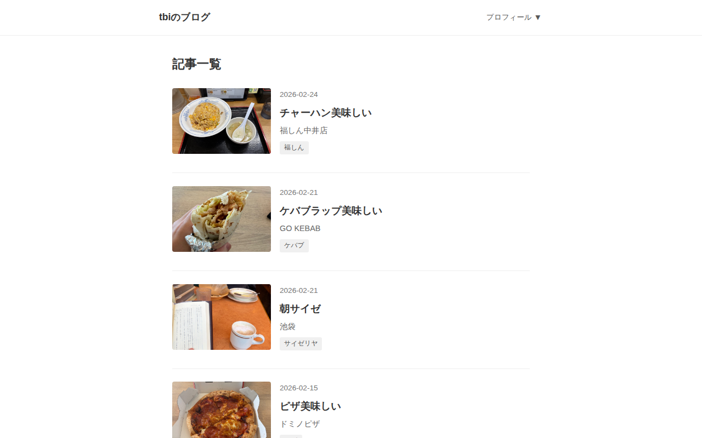
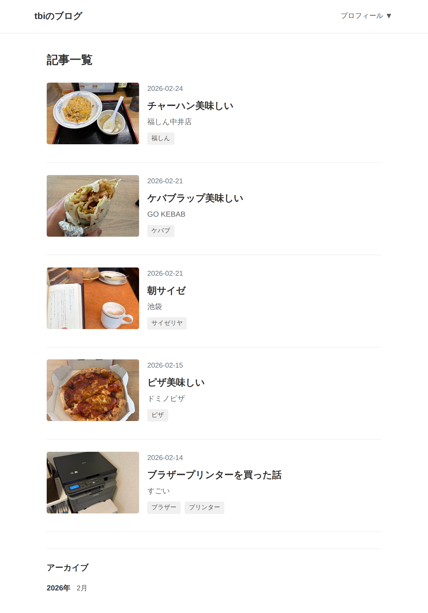
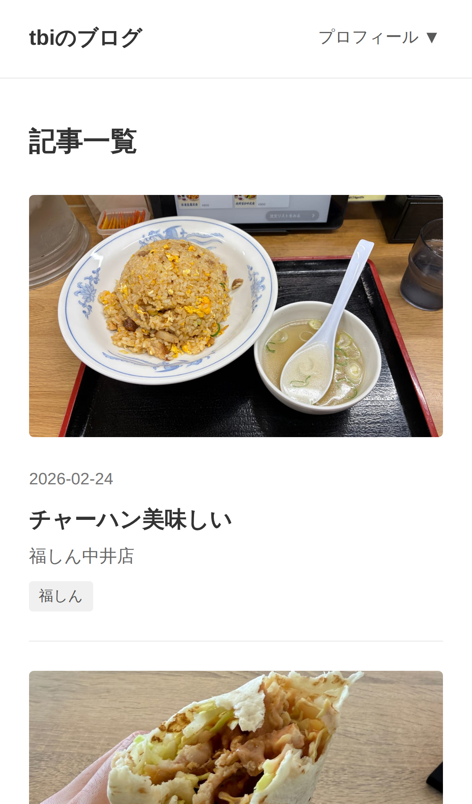
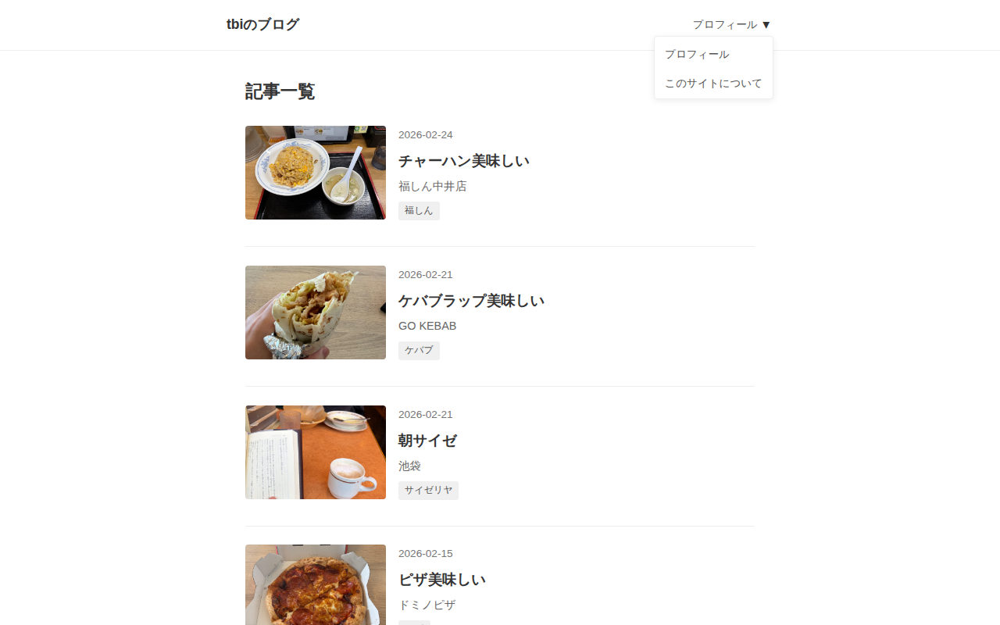
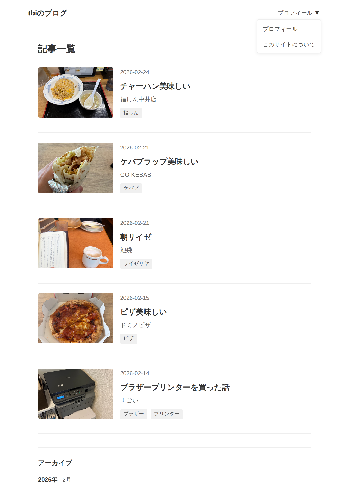
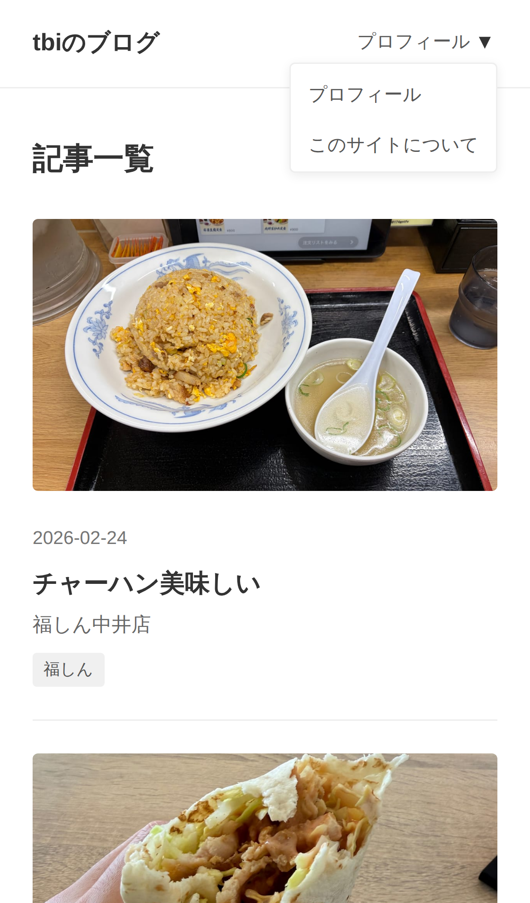
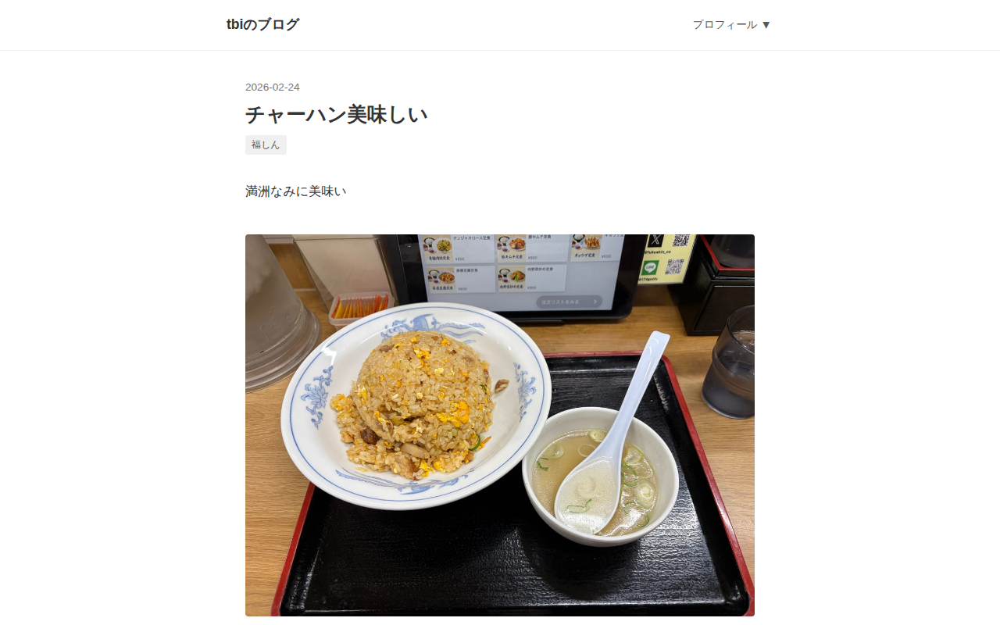
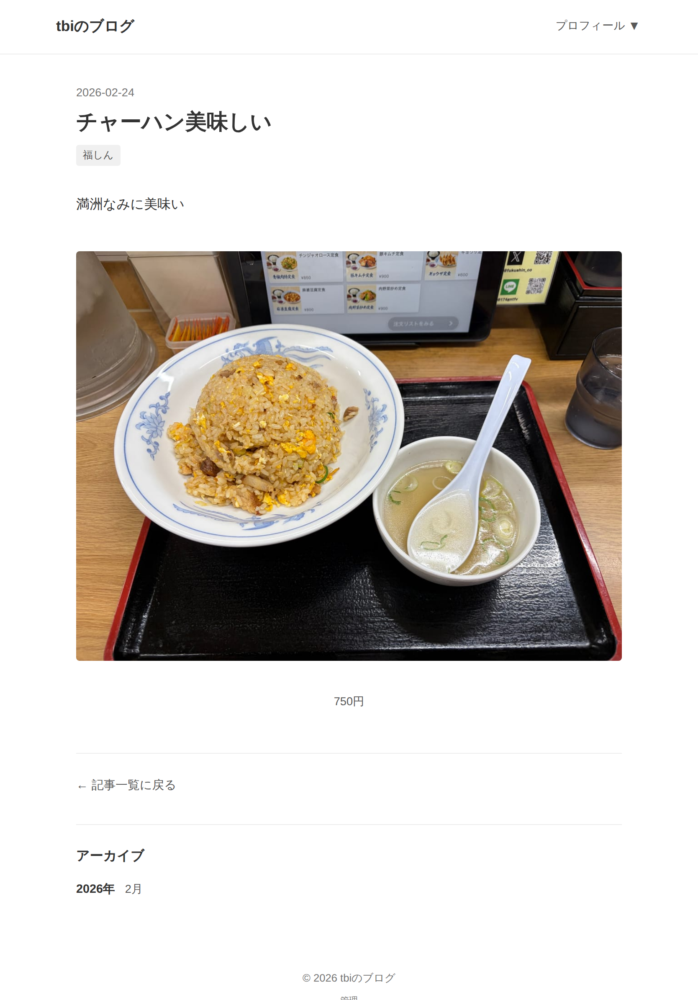
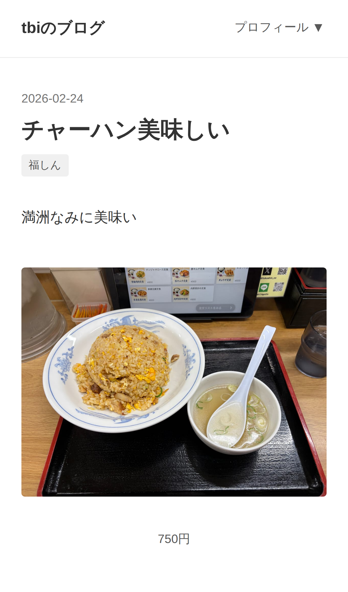
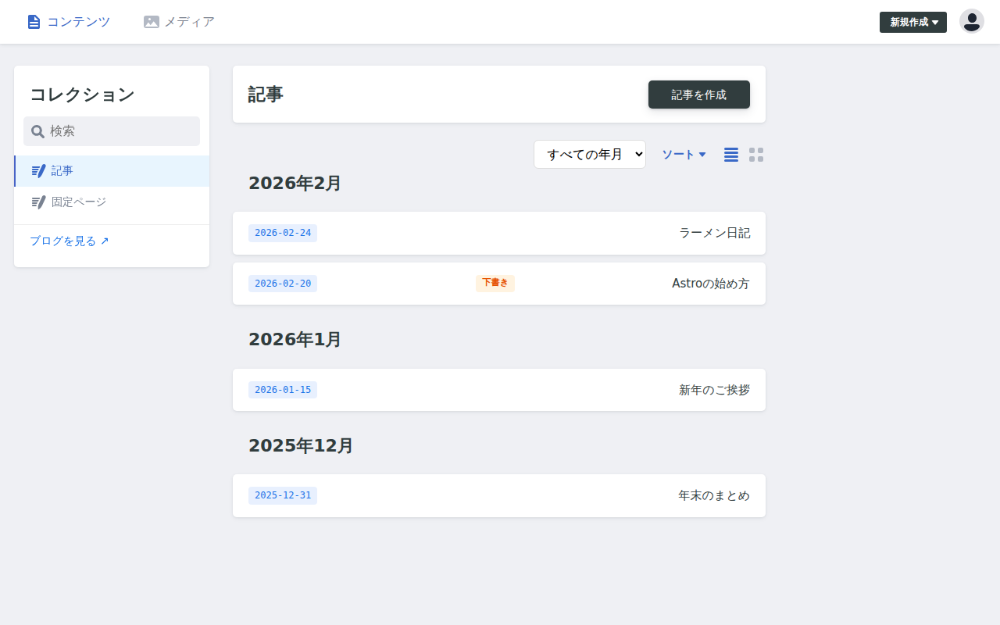
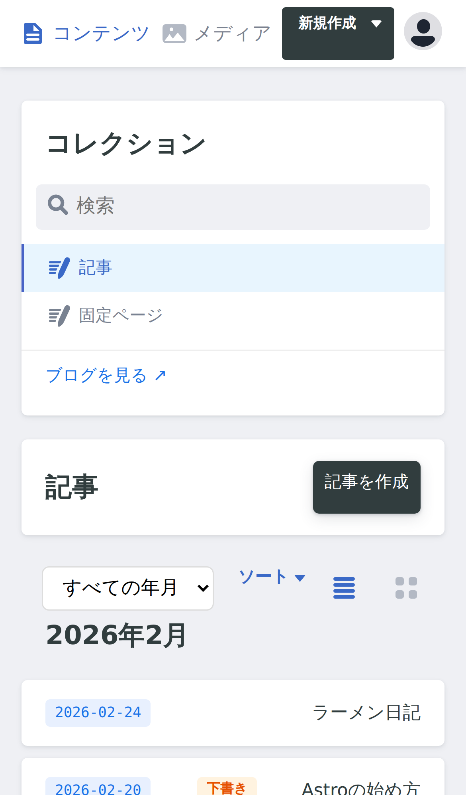
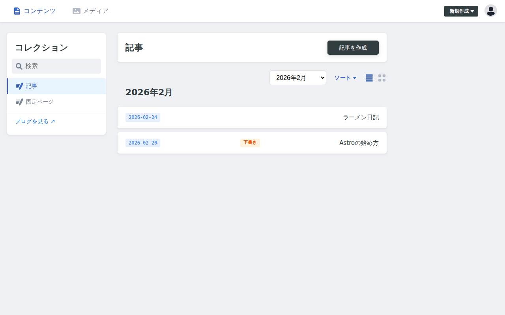
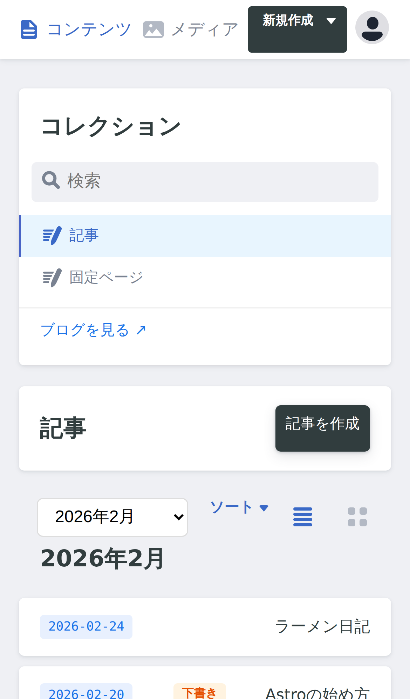
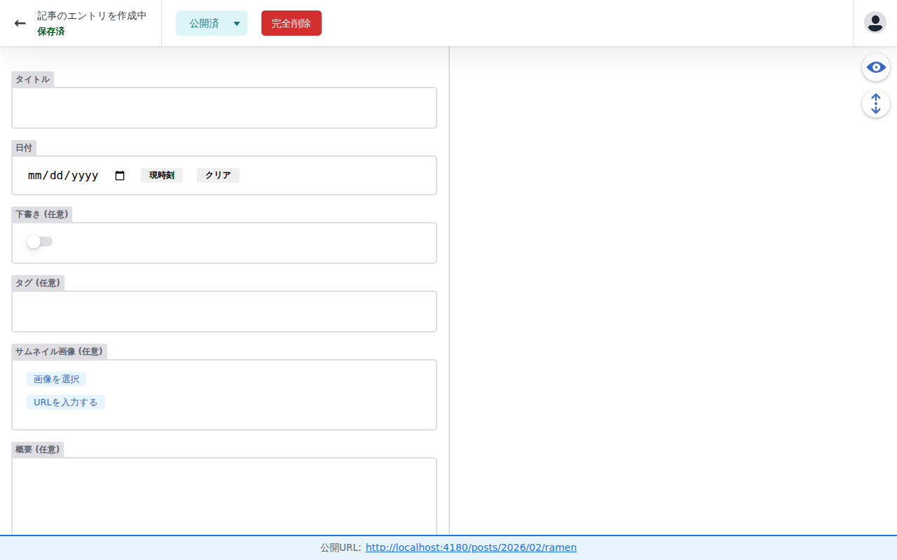
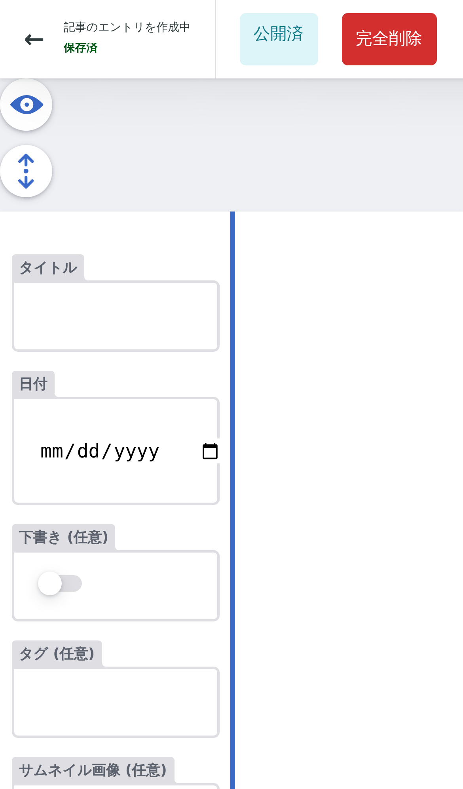
注: CMS はサンドボックスのネットワーク制約により、Decap CMS 3.10.0 の同一バイトローカルバンドルを context.route() で供給して検証（SRI一致）。エディタのフィールド値が空なのはモック制約であり画面遷移・計測は有効。レビュー専用のためソースコードは未変更。